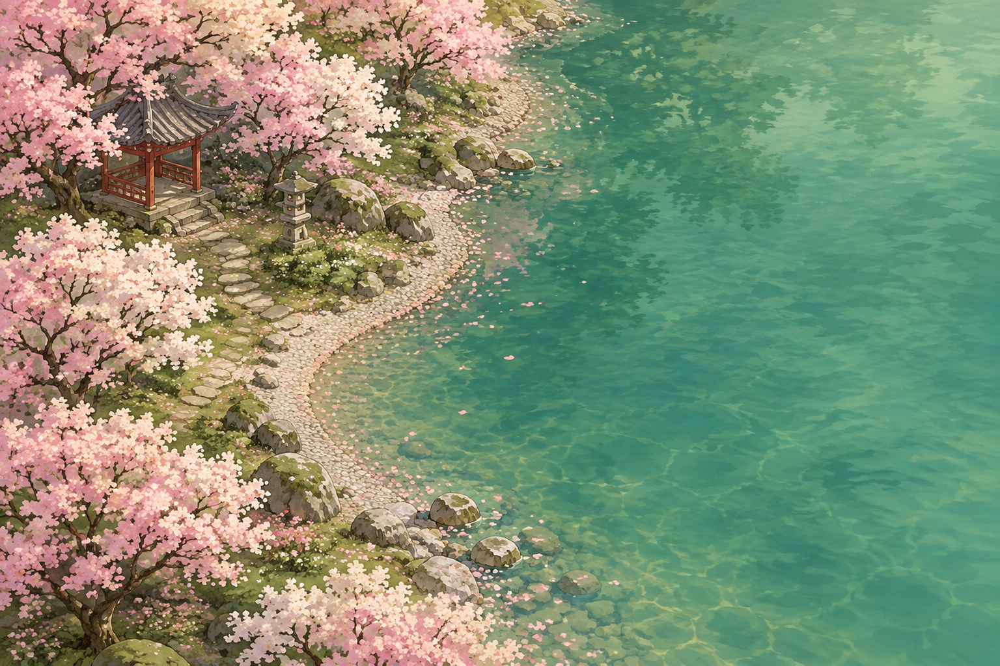
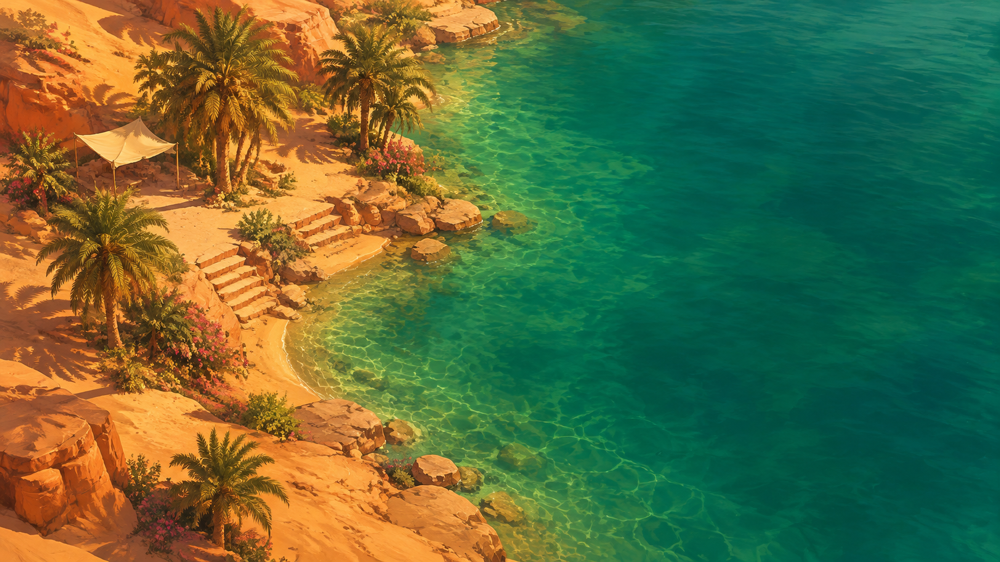
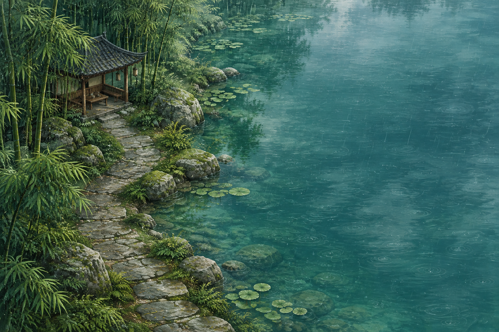

<!doctype html><html lang="zh-CN"><meta charset="utf-8"><meta name="viewport" content="width=device-width,initial-scale=1"><title>海屿 · 风景提案</title><style>
*{box-sizing:border-box}body{margin:0;background:#f4f3ef;color:#263c3e;font-family:"Microsoft YaHei UI",sans-serif}main{max-width:1440px;margin:auto;padding:48px 36px}header{display:flex;align-items:baseline;justify-content:space-between;margin-bottom:30px}h1{font:36px KaiTi,serif;margin:0}header p{font-size:13px;color:#687775}section{display:grid;grid-template-columns:1fr 1fr;gap:28px}.card{padding:0;border:0;background:transparent;color:inherit;text-align:left;cursor:zoom-in}.card img{display:block;width:100%;aspect-ratio:16/9;object-fit:cover;border-radius:8px}.card span{display:flex;align-items:baseline;justify-content:space-between;gap:12px;padding:16px 2px 4px}.card strong{font-size:20px;font-weight:500}.card small{font-size:12px;color:#687775}.card:focus-visible{outline:3px solid #387b7c;outline-offset:6px}dialog{padding:0;border:0;background:#142324;width:min(96vw,1600px);max-height:95vh;border-radius:8px}dialog::backdrop{background:#061113da}dialog img{display:block;width:100%;max-height:86vh;object-fit:contain}dialog footer{display:flex;justify-content:space-between;align-items:center;color:white;padding:14px 20px}dialog button{border:0;background:transparent;color:white;font:inherit;cursor:pointer}@media(max-width:700px){main{padding:28px 18px}header{display:block}section{grid-template-columns:1fr}.card span{display:block}.card small{display:block;margin-top:8px}}
</style><main><header><h1>再去四个地方</h1><p>风景概念预览 · 点击放大</p></header><section><button class="card" data-image="sakura.png" data-title="樱花水岸"><span><strong>樱花水岸</strong><small>浅粉花树 · 青瓷绿水 · 春日晨光</small></span></button><button class="card" data-image="moonlight.png" data-title="月光海湾"><span><strong>月光海湾</strong><small>银蓝月色 · 幽蓝海水 · 岸边微光</small></span></button><button class="card" data-image="oasis.png" data-title="沙漠绿洲"><span><strong>沙漠绿洲</strong><small>杏色沙丘 · 翡翠湖水 · 棕榈树影</small></span></button><button class="card" data-image="bamboo.png" data-title="雨后竹溪"><span><strong>雨后竹溪</strong><small>苍翠竹林 · 苔石小径 · 清冷水色</small></span></button></section></main><dialog><footer><span></span><button>关闭 ×</button></footer></dialog><script>
const dialog=document.querySelector('dialog');document.querySelectorAll('.card').forEach(card=>card.onclick=()=>{dialog.querySelector('img').src=card.dataset.image;dialog.querySelector('img').alt=card.dataset.title;dialog.querySelector('span').textContent=card.dataset.title;dialog.showModal()});dialog.querySelector('button').onclick=()=>dialog.close();dialog.onclick=e=>{if(e.target===dialog)dialog.close()};
</script></html>